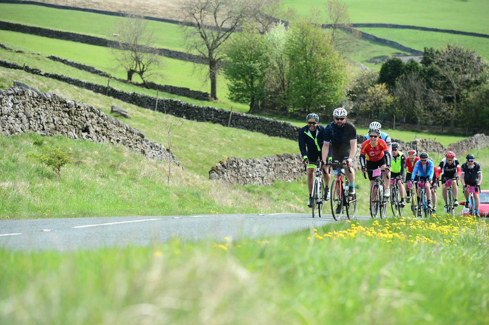

Remote Team Retreats: How to Bring a Distributed Team Together
How to plan a retreat for a remote or distributed team: choosing a destination everyone can reach, coordinating flights, and a programme built for connection.

For remote teams, the retreat is not a nice-to-have. It's often the only time people see each other in person, and it builds the trust that makes the next months of video calls work. It also comes with a unique challenge: getting people from many cities, sometimes many countries, to the same place at the same time.
1. Map where everyone lives
Before choosing a destination, list every participant's nearest airport. Then look for destinations with direct flights from as many of those airports as possible. Hubs such as Lisbon, Barcelona, Athens or Vienna often work best for teams spread across Europe.
2. Book flights centrally
With a distributed team, "everyone books their own" leads to arrivals spread over a whole day and very different prices. Central booking means coordinated arrivals, one budget and one contact if something goes wrong. It's what we do: every participant's flight, from their own city. More in our group flights guide.
3. Plan for connection first
Remote teams already do plenty of work together. What they lack is informal time. Our recommended balance for remote retreats is 40% connection, 40% work, 20% free time:
- Meals together at long tables.
- Activities in mixed groups so people meet colleagues from other teams.
- Walking one-to-ones between people who work together but have never met.
- Unstructured evenings where conversations happen naturally.
4. Use the time for what can't be done online
- Big strategic conversations that need energy in the room.
- Feedback and difficult discussions.
- Creative work and brainstorming.
- Onboarding new hires into the culture.
Leave status updates and slide reviews for video calls.
5. Choose the right venue
An exclusive-use venue such as a villa, a quinta or a small hotel booked out creates a "home for the week" feeling that remote teams love. Look for comfortable shared spaces, a good meeting room and outdoor areas. See how to choose an offsite venue.
6. Consider time zones and travel fatigue
If part of the team flies long-haul, start the programme in the afternoon of day one and keep the first evening light. Avoid early-morning sessions on day two.
7. Keep the momentum afterwards
Share photos and decisions quickly, set up small cross-team follow-ups, and put the next retreat date in the calendar before people go home. Many remote companies meet two to four times a year (see the rise of the quarterly offsite).
Ideas for remote team destinations
- Ericeira: surf and startup vibes near Lisbon.
- Mallorca: a finca for the whole team.
- Kraków: great value and easy flights.
- Crete: sun, nature and food.
Plan your remote team retreat
Talk to our expert and tell us where your team lives. We'll send 3 proposals with every flight included. Or try the budget calculator.
Frequently asked questions
How often should remote teams meet in person?
Most remote teams meet once or twice a year as a whole company, with some teams meeting quarterly.
How do you choose a destination for a distributed team?
Map every participant's nearest airport and choose a destination with direct flights from as many of them as possible.
What should a remote team retreat focus on?
Connection and the work that is hard to do online: strategy, feedback, creative sessions and onboarding.
Let's plan your team's next retreat
Venue, programme, activities and every participant's flight, handled by one team. It starts with a call with our expert.
Keep reading
All articles
Group Flights for Company Retreats: How to Fly 40 People from 8 Cities
How to book flights for a company retreat when your team lives in several cities: coordinated arrivals, group fares, one budget and real support.

Hybrid Work and the Rise of the Quarterly Offsite
Why hybrid and remote companies are moving to quarterly offsites, how to plan a lighter meetup format, and how to keep costs and logistics under control.

25 Team-Building Activities Adults Actually Enjoy
Team-building activities that don't feel forced: outdoor adventures, food experiences, creative workshops and city games for company retreats of any size.